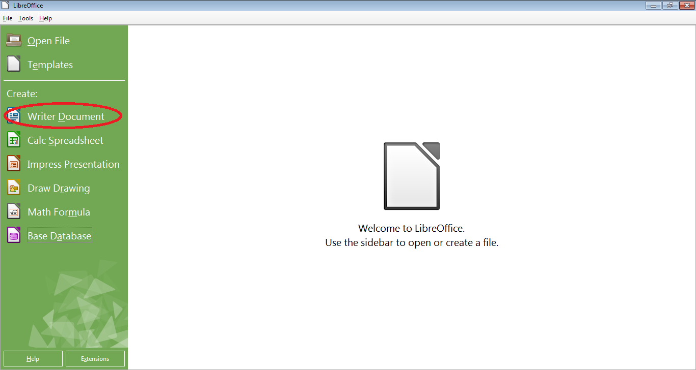
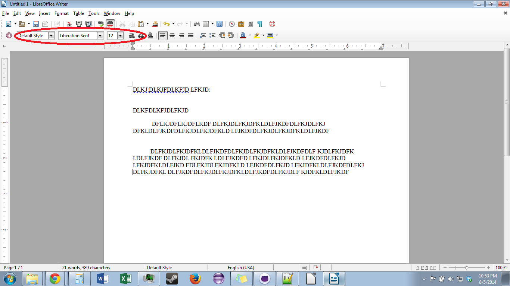

Most of the use for Microsoft Office or LibreOffice is for writing basic documents or letters.
Pre-requisites
LibreOffice
A letter or document in mind
Steps
Open LibreOffice.
Open the Writer program, as shown in Figure 1.
If you want to edit an existing document, select the "Open File" button instead.
Type the text of the letter, using the font options shown in figure 2 to alter the text as needed.
Periodically save your document by pressing ctrl + "s" at the same time.
When finished, either exit LibreOffice by clicking the X at the upper right of the screen,
or print your document by pressing ctrl + "p" at the same time and following the onscreen prompt.
Figures

Figure 1: The LibreOffice main page, with the Writer button circled

Figure 2: A sample document with place holder text and the font options circled